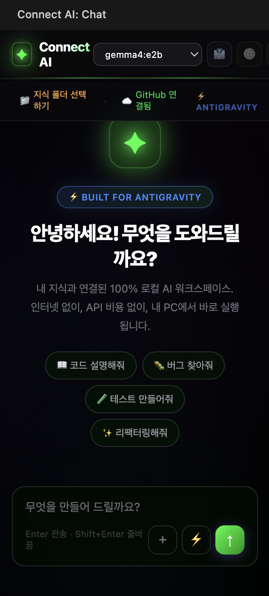

클라우드 없이,
로컬에서 완결되는
AI 워크플로우.
Obsidian + Ollama + AntiGravity 통합 시스템.
Python과 Claude로 구현한 로컬 AI 지식 관리 및 자동화 파이프라인.
Obsidian · AntiGravity
Workflow Automation
월 API 비용 $0
토큰이 떨어지면
작업도 멈춘다.
AI를 개발 도구로 쓰기 시작하면서 가장 먼저 부딪힌 건 비용이 아니라 불연속성이었다. 프롬프트가 길어지고 컨텍스트가 쌓일수록 어느 순간 작업 흐름이 강제로 끊긴다.
요금제를 올려도 해결이 안 됐다. 월 $30를 써도 프로젝트 막판엔 또 한도가 걸렸다. 비용이 오를수록 의존도도 함께 높아진다는 걸 그때 처음 실감했다.
"내가 AI를 쓰는 게 아니라, AI가 허락하는 범위 안에서만 일하고 있다."
그 한계를 뒤집고 싶어서 로컬 AI를 찾기 시작했다. 토큰 걱정 없이, 인터넷 없이, 내 컴퓨터에서 끝까지 돌아가는 워크플로우를 만들기 위해.
다섯 개의 도구가
하나의 파이프라인이 된다.
실제로 따라 만들며
배웠다.
Connect AI Lab 유튜브 채널의 EP.3 — 「두뇌 복제! 무료 AI 직원 육성」을 학습 경로로 삼아, 각 도구의 역할을 직접 경험하고 하나의 파이프라인으로 통합했다.
강의를 보는 데 그치지 않고, 동일한 환경을 직접 구성하며 Obsidian Vault 연동, Ollama 모델 설치, AntiGravity 파이프라인 설정까지 각 단계를 손으로 체득했다.

Fig. REF — Connect AI Lab · EP.3 · 「두뇌 복제! 무료 AI 직원 육성」
입력은 Obsidian에서,
처리는 Ollama에서,
출력은 다시 Obsidian으로.
세 단계가 하나의 루프를 형성한다. 노트에서 컨텍스트를 꺼내 로컬 LLM이 처리하고, 결과를 다시 Vault에 기록한다. 외부 API 호출 0건.
Obsidian Vault
Ollama + AntiGravity
Vault에 자동 기록
IDE 안에서
로컬 AI가 대답한다.
VS Code 마켓플레이스에 등록된 Connect AI 익스텐션을 설치하면, 편집기 안에서 Ollama 로컬 모델과 직접 대화할 수 있다.
GitHub 연결, 지식 폴더 선택, AntiGravity 연동 — 세 가지 기능이 사이드바 하나에 집약된다.

작업마다 다른 엔진,
맞춤형 에이전트.
단일 모델이 아니라 작업에 특화된 로컬 AI 엔진을 선별해 투입한다. 텍스트 분석엔 Gemma 4 E4B, 코드 작업엔 Qwen2.5-Coder, 일반 추론엔 Llama 3.2를 파이프라인에서 자동 라우팅한다.
모든 모델은 Ollama 위에서 실행 — 클라우드 없이 로컬 GPU 하나로 멀티 에이전트 워크플로우를 구동한다.
AntiGravity가 태스크 유형을 분류 →
최적 모델로 자동 라우팅 →
결과를 Obsidian Vault에 기록.
AI를 소유하는 것은 다르다.
Connect AI Lab 채널을 따라가며 배운 건, 로컬 AI가 "열등한 대안"이 아니라 제어 가능한 도구라는 점이었다.
모델이 작아도 파이프라인이 좋으면 충분하다. 그 파이프라인을 만드는 능력이 곧 경쟁력이다.
RAG(Retrieval-Augmented Generation) 파이프라인 구축. Obsidian Vault 전체를 벡터 DB로 인덱싱해서, 질문에 가장 관련 있는 노트를 자동으로 컨텍스트에 주입하는 시스템으로 확장한다.